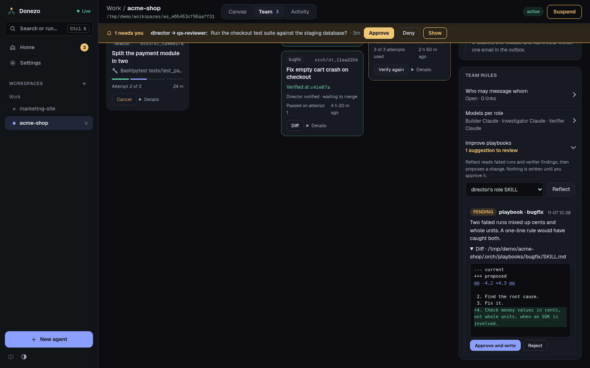

Team
How a director splits work, who checks it, and where you watch it happen.
Delegation
A director agent does not do the hands-on work. For each unit it starts a sub-agent and gives it:
- a playbook, the kind of work (see below);
- a brief, which must stand on its own, because a sub-agent cannot see your chat;
- a Done means, what a verifier can observe: a command and its expected output, a flow in the running app, or a value read back.
Each director can have 4 active sub-agents at once (ORCH_SUBAGENTS_MAX). Past that, it is told to wait for
one to finish or to cancel one.
You can delegate by hand as well. On the Team tab, press Delegate a task and fill in Report the result to, Playbook, Title, Brief and Done means. Brief and Done means are required.
The four playbooks
| Playbook | What it does | Where |
|---|---|---|
feature | Builds one feature and proves it works on the real interface. | Own worktree and branch |
bugfix | Reproduces the bug first, finds the root cause with evidence, then fixes it and checks the same reproduction. | Own worktree and branch |
refactor | Records current behaviour first, then changes structure in small steps that keep that record the same. | Own worktree and branch |
investigate | Answers a question with evidence from the code and its history. Read-only. | The director's folder |
A worktree is a separate copy of your project on its own branch, named orch/<id>. If the
director's folder is not a git repository, a sub-agent has no worktree and shares that folder; its card says
no worktree.
The verifier
When a sub-agent ends its turn, Donezo starts a brand-new agent, the verifier, to check the Done means. No agent grades its own work.
- It observes. It runs the command or drives the flow itself. The builder's report counts as a claim, not as proof.
- It may not edit. If files change while it runs, its verdict is thrown away.
- Each verdict is tied to a commit. A pass reads Verified at that commit.
- Fail goes back. The findings return to the same sub-agent to fix, then a new verifier checks again.
- It stops at a limit. After 3 failed verifications (
ORCH_SUBTASK_MAX_ATTEMPTS) the work is marked failed, the director is told, and it shows up on Home.
Every pass or fail goes back to the director as a message. It does not need to keep asking.
The Team tab

The row on top counts what is working and verifying now, plus what passed, failed, and was sent back to fix in the last 24 hours. The filter switches between Active and recent, All and Failed. With two or more directors, another filter appears (All directors). Scrolling loads more, 10 at a time.
| Column | Meaning |
|---|---|
| Building | Waiting to start, working, or fixing after a failed check. |
| Verifying | A verifier is checking. The card shows the Done means. |
| Passed | Verified. The card shows the commit and that the director was told. |
| Failed | Out of attempts or stopped, with what the verifier found. Cancelled work is listed here too, under the All filter. |
Buttons on a card depend on its stage:
- Cancel: stops work in progress. A running step is killed and the director is told.
- Diff: the branch's changes.
- Verify again: one more independent check, for example after you fixed something by hand.
- Details: the brief, the Done means, the verdict and the builder's report, plus Builder run, Verifier run and, when it applies, Copy merge (copies the merge command) and Discard (removes the worktree and deletes the branch; commits that were not merged are lost).
The director's own panel on the canvas shows the same cards for its team. Its button Whole team & settings leads here.
Decision log
Why the director chose this is a list, newest first, of the decisions the director and sub-agents recorded: what they chose, why, and sometimes Evidence you can expand. Decisions about one sub-agent show its task id. Read it when you want to know why the work was split a certain way, or why a failure was dropped.
Team rules
- Who may message whom: Open — edges are documentation lets any agent signal any other. Enforced — only these edges may signal allows only the sender and receiver pairs you listed. Add them with Add edge, or with Learn from recent signals. People and sub-agent results always get through.
- Models per role: which model runs builders, investigators and verifiers. Without a choice, sub-agents run on Claude, using the director's model if it runs Claude. Gemini is used only if you pick it here.
Reflect
Reflect turns past failures into a better playbook. Nothing is written until you approve it.
- Open Improve playbooks under Team rules.
- Choose what to improve: a director's own role SKILL, or a playbook for this repository.
- Press Reflect. A read-only agent reads failed runs and verifier findings, then proposes a change. If nothing has gone wrong for that playbook yet, the app says so and nothing runs.
- Read the reasoning and the diff, then press Approve and write or Reject.

.orch/playbooks/.